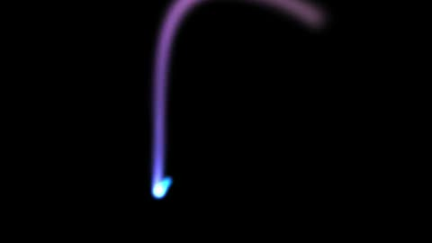

HomeAccueil / ExamplesExemples
Video feedback loopBoucle de rétroaction vidéo
Buffer A reads itself slightly rotated and enlarged, like a camera filming its own screen.Le tampon A se relit lui-même légèrement tourné et agrandi, comme une caméra qui filme son propre écran.

CategoryCatégorie: Multiple passesPasses multiples - retour_video.glsl - 11 lineslignes - File on GitHubFichier sur GitHub
In the program: Examples, choose it, Add to the list. Or copy the code into a file next to the program and drop it on the window.Dans le programme : Exemples, choisissez-le, Ajouter à la liste. Ou copiez le code dans un fichier et glissez-le sur la fenêtre.
This example uses several passes: the files below go together.Cet exemple utilise plusieurs passes : les fichiers ci-dessous vont ensemble.
CodeCode
retour_video.glsl
// SPDX-License-Identifier: GPL-3.0-or-later
// Copyright (C) 2026 Patrick JAILLET
// fr: Boucle de rétroaction vidéo — Le tampon A se relit lui-même légèrement tourné et agrandi, comme une caméra qui filme son propre écran.
// en: Video feedback loop — Buffer A reads itself slightly rotated and enlarged, like a camera filming its own screen.
// iChannel0=bufferA
void mainImage(out vec4 fragColor, in vec2 fragCoord) {
fragColor = vec4(texture(iChannel0, fragCoord / iResolution.xy).rgb, 1.0);
}retour_video.bufferA.glsl
// SPDX-License-Identifier: GPL-3.0-or-later
// Copyright (C) 2026 Patrick JAILLET
// iChannel0=bufferA
mat2 rot(float a) { return mat2(cos(a), -sin(a), sin(a), cos(a)); }
void mainImage(out vec4 fragColor, in vec2 fragCoord) {
vec2 uv = (fragCoord - 0.5 * iResolution.xy) / iResolution.y;
vec2 q = rot(0.02 * sin(iTime * 0.5)) * uv * 0.985;
vec3 prev = texture(iChannel0, q * vec2(iResolution.y / iResolution.x, 1.0) + 0.5).rgb;
prev = prev * 0.97 + 0.02 * prev.gbr;
vec2 c = 0.25 * vec2(cos(iTime), sin(iTime * 1.3));
vec3 ink = 0.5 + 0.5 * cos(iTime * 0.7 + vec3(0.0, 2.0, 4.0));
fragColor = vec4(prev + ink * smoothstep(0.03, 0.0, length(uv - c)), 1.0);
}